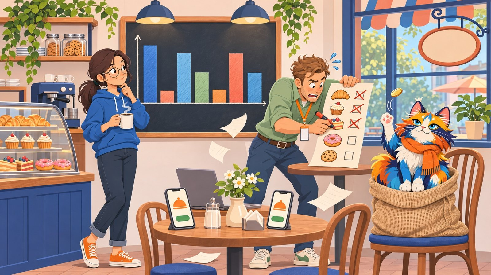
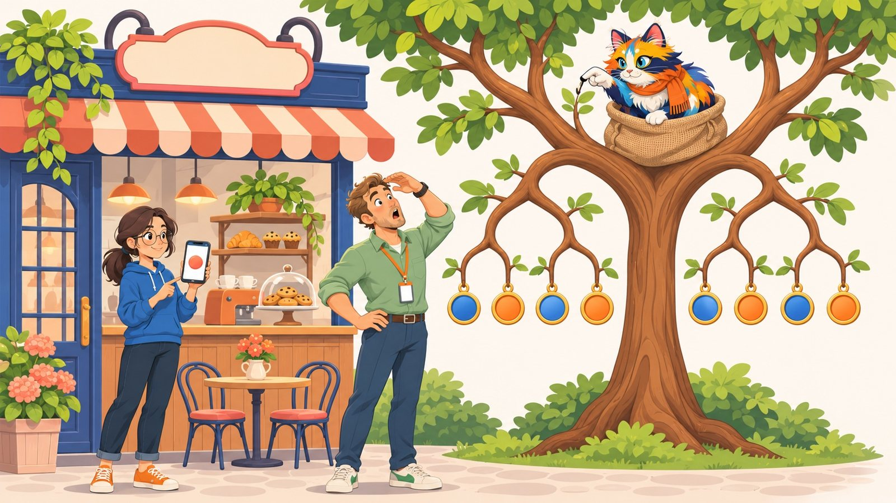

Понедельник — 7 из 10, вторник — 3 из 10. Меню ни при чём: десять гостей — маленькая порция, а маленькие порции скачут.
Шаг 2 из 9
Вероятность как частота
После шага ты сможешь отличить долю на длинной серии от скачков короткой и прикинуть, сколько повторов нужно, чтобы доля успокоилась.

Первая неделя кафе. В понедельник десерт к кофе взяли 7 гостей из 10, во вторник — только 3. Боб уже переписывает меню. А может, меню ни при чём, и так ведёт себя любая маленькая порция?
Ровно пять из десяти — как часто?

Боб, продакт
Во вторник всё сломалось: десерт взяли трое из десяти! В понедельник было семеро. Срочно меняю витрину.

Алиса, аналитик
Допустим, каждый гость берёт десерт с шансом ½, как монетка. Тогда десять гостей — это десять бросков. Как часто десять бросков дают ровно пять орлов?
Боб, продакт
Монетка честная — значит, почти всегда.
Напиши число — на следующей карточке бросим серии и проверим.
Бросай серии по десять
Одна серия — один день с десятью гостями. Бросай по одной, потом тысячей.
Число орлов в серии из 10 бросков; точки — теория
Столбик — доля серий с таким числом орлов · серая точка — теория
Ровно пять — самый частый результат, но и он бывает только примерно в каждом четвёртом дне. Зато от 2 до 8 орлов выпадает почти всегда — в 97.9% серий. Семь из десяти и три из десяти — обычные дни для честной монетки.
Бегущая доля: короткая серия скачет, длинная успокаивается
Сначала прикинь: если бросить монетку 10 000 раз, как часто доля орлов окажется в пределах 49–51%?
Доля орлов по мере бросков, шкала логарифмическая
твоя сериявеер из 50 серий49–51%
Шкала бросков растягивает начало: от 1 до 10 столько же места, сколько от 1000 до 10 000.
Вероятность — то, к чему ползёт доля
История
В штуках
Из 1000 дней по 10 гостей при честных 50% «семь и больше» бывает примерно в 172 днях, «три и меньше» — тоже в 172. Каждый третий день выглядит «странным», хотя ничего не менялось.
Формула
Словами: вероятность — то, к чему ползёт доля, когда повторов становится много. Чем больше , тем уже разброс доли: вчетверо больше бросков — вдвое уже.
Насколько именно сужается разброс и откуда «вчетверо — вдвое» — в курсе «Сигнал или шум», глава 4 «Шум».
Каждый двадцатый — значит, ровно один из двадцати?
В приложении кафе гостям предлагают подписку на кофе. Оформляет её примерно каждый двадцатый (5%). Боб ждёт, что в каждой группе из 20 гостей будет ровно один подписчик. Запускай группы и смотри.
Последняя группа из 20 гостей и доли групп по числу подписчиков
Общая доля подписчиков быстро встаёт к 5%, а отдельные группы ведут себя совсем не «по среднему»: ровно один подписчик — только примерно в 38% групп, ни одного — в 36%. Почему именно 37.7%, посчитаем формулой в шаге 7.
Монетка не возвращает долг
Во время Второй мировой войны математик Джон Керрих оказался в лагере для интернированных и, чтобы убить время, бросил монетку 10 000 раз. Орлов вышло 5067 — доля 50.67%. А вот разница «орлы минус решки» к концу была 134 — больше, чем вообще может получиться за первые 100 бросков.
Брось сам и посмотри на разницу.
Сначала запиши догадку, потом проверь.
Разница «орлы минус решки» по мере бросков; серая зона —
Разница обычно растёт примерно как : после 100 бросков она около 8, после 10 000 — около 80. Но 80 на фоне 10 000 — меньше 1%, а 8 на фоне 100 — целых 8%. Доля сходится к ½ не потому, что монетка отыгрывается за серию орлов, а потому, что старый перекос тонет в новых бросках. Закон больших чисел работает разбавлением, а не возвратом долга.
Идея из книги: Леонард Млодинов, «(Не)совершенная случайность»
Десять пятёрок из десяти — это много?
У кафе в приложении 95% хороших отзывов. Отзывы приходят пачками по 10. Каждая клетка — отзыв: зелёная — хороший, красная — плохой. Блоки, где все 10 хорошие, обведены.
Идеальные «10 из 10» выпадают примерно в 60% блоков, хотя кафе не идеальное. Поэтому в топе любого рейтинга по доле пятёрок — маленькие кафе с горсткой отзывов. И в самом низу рейтинга — тоже они: маленькие порции чаще дают крайности в обе стороны.
Идеи из книги: Daniel Kahneman, «Thinking, Fast and Slow», и роликов 3Blue1Brown
Симуляция вместо формулы
Допиши функцию: доля серий из n бросков, где орлов хотя бы k. Подсказка: rng.binomial(n, 0.5, size=trials) бросает сразу все серии и возвращает число орлов в каждой.
Чтобы убедиться, что симуляция не врёт, сравни с точным ответом: from math import comb; sum(comb(10, j) for j in range(6, 11)) / 2**10 даёт 0.377. Как такое считать без компьютера — в шаге 3.
Пять орлов подряд
Боб, продакт
Пять орлов подряд! Теперь ставлю на решку: доля должна вернуться к половине, значит, монетке пора отыграться.
Что не так в рассуждении Боба?
У монетки нет памяти: шанс решки в шестом броске ½, как и в первом. Доля орлов вернётся к половине потому, что за пятью орлами последуют тысячи обычных бросков, а не потому, что решек «задолжали».
Две задачи и как на них отвечать
Схема ответа: переформулируй → посчитай в штуках → запиши формулу → проверь симуляцией → скажи вывод одной фразой.
Что вероятнее при честной монетке: 6 орлов из 10 бросков или 60 орлов из 100? А «хотя бы 60%»?
Переформулирую: доля орлов в обоих случаях 60%. Вопрос в том, как часто короткая и длинная серии дают такой перекос.
В штуках: из 1000 серий по 10 бросков ровно 6 орлов будет примерно в 205, из 1000 серий по 100 — ровно 60 примерно в 11. С «хотя бы 60%» — около 377 против 28.
Формула: , ; хотя бы 60% — 37.7% против 2.8%. Откуда 210 из 1024 — шаг 3, общая формула — шаг 7.
Проверка: функция share_at_least из карточки с кодом.
Вывод: короткая серия даёт перекос в 60% гораздо чаще — в длинной он почти исчезает.
Честная монетка выпала орлом пять раз подряд. Какова вероятность орла в шестой раз?
Переформулирую: влияют ли прошлые броски на следующий? Нет: броски независимы, у монетки нет памяти.
В штуках: из 32 000 серий по шесть бросков около 1000 начинаются с пяти орлов. В шестом броске у этих серий около 500 орлов и около 500 решек.
Формула: . Другое дело — шесть орлов подряд, загаданные заранее: .
Вывод: ½. Закон больших чисел работает разбавлением, а не возвратом долга. Если интервьюер намекает на кривую монетку — это уже другая задача, про Байеса — шаг 6.
Четыре вопроса про частоту
Бросков монетки становится всё больше. Что происходит с разницей «орлы минус решки»?
Разница обычно растёт примерно как : около 8 после 100 бросков, около 80 после 10 000. Но делится она на , поэтому доля всё равно прижимается к ½.
В понедельник десерт взяли 7 гостей из 10. Что из этого следует?
На десяти гостях доля гуляет от 20 до 80% почти всегда. Чтобы говорить о доле десертов, нужны сотни гостей.
В топе рейтинга кафе по доле пятёрок — сплошь маленькие кафе. Почему так может быть?
Маленькие порции чаще дают крайности в обе стороны: маленькие кафе оказываются и в самом верху, и в самом низу. Это свойство выборки, а не кухни.
Какой оценке хороших отзывов стоит доверять больше: 10 из 10 или 96 из 100?
При 95% хороших отзывов идеальные 10 из 10 выпадают в 60% блоков, так что «100%» на десяти отзывах — частое везение. 96 из 100 опирается на в десять раз больше данных.
Короткая серия скачет, длинная успокаивается
- Вероятность — то, к чему ползёт доля: при большом .
- Короткие серии скачут: ровно 5 орлов из 10 — только в 24.6% серий, а от 2 до 8 — в 97.9%.
- Длинные успокаиваются: на 10 000 бросков доля в пределах 49–51% примерно в 19 сериях из 20.
- Вчетверо больше повторов — разброс доли вдвое уже.
- Разница «орлы − решки» при этом растёт (примерно как ). Монетка не возвращает долг: закон больших чисел работает разбавлением.
- Маленькие выборки дают крайности в обе стороны: 10 из 10 — не повод для «100%».
- Частота, доля
- сколько раз случилось событие, делённое на число повторов; relative frequency
- Закон больших чисел
- доля на длинной серии прижимается к вероятности; law of large numbers, LLN
- Независимые броски
- прошлые броски не влияют на следующий; independent trials
- Ошибка игрока
- «после пяти орлов пора решке»; gambler's fallacy
- Симуляция
- повторить опыт тысячи раз на компьютере и посчитать доли; Monte Carlo simulation
